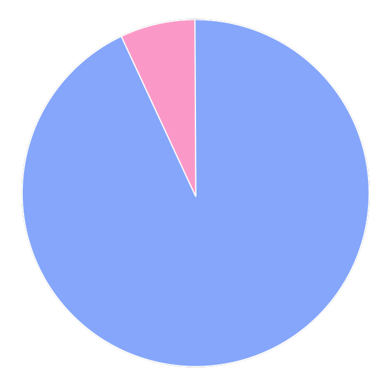

Overall View
84% of executive positions in the gaming industry are held by men. Outside of the executive ranks, only 24% of those working in the industry are women. Female representation is still a problem. And for those already working in the industry, their gender may work against them.

Inside Job
According to a 2015 Gender Balance Workforce Survey reported by the Guardian, amongst women working in the U.K. gaming industry, 45% felt that their gender was a limiting factor in their career progression. In the same survey, 33% of respondents noted that they had experienced direct harassment or bullying because of their gender.
Payment
According to Gamasutra's Game Developer Salary Survey 2014, men working U.S.-based salaried jobs in the game industry made $85,074 on average in 2013, whereas women made an average of $72,882 (excluding students and educators).
That means on average, women made 86 cents on every dollar that men made in the U.S. game industry.
It's 2021 and the wage-gap is still a problem.
Many people refuse to accept this but the statistics dont lie. White men make $1.00 for every $0.79 a woman makes, and for minority women (Black, Hispanic, American Indian, etc) the numbers are as low as $0.54.
So what causes the Wage-Gap?
•Industries and Jobs: So-called women’s jobs, which are jobs that have historically had majority-female workforces, such as home health aides and child care workers, tend to offer lower pay and fewer benefits than so-called men’s jobs, which are jobs that have had predominantly male workforces, including jobs in trades such as building and construction. These gendered differences are true across all industries and the vast majority of occupations, at all levels
•Years of Experience: Women are disproportionately driven out of the workforce to accommodate caregiving and other unpaid obligations and thus tend to have less work experience than men. Access to paid family and medical leave makes women more likely to return to work—and more likely to return sooner. However, as of March 2019, only 19 percent of civilian workers had access to paid family leave through their employers and only 40 percent had access to short-term disability insurance benefits to deal with their own medical needs.
•Hours Worked: Because women tend to work fewer hours to accommodate caregiving and other unpaid obligations, they are also more likely to work part time, which means lower hourly wages and fewer benefits compared with full-time workers.
•Discrimination: Gender-based pay discrimination has been illegal11 since 1963 but is still a frequent, widespread practice—particularly for women of color.12 It can thrive especially in workplaces that discourage open discussion of wages and where employees fear retaliation. Beyond explicit decisions to pay women less than men, employers may discriminate in pay when they rely on prior salary history in hiring and compensation decisions; this can enable pay decisions that could have been influenced by discrimination to follow women from job to job.